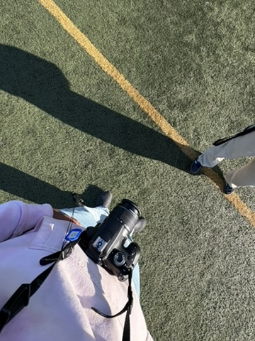
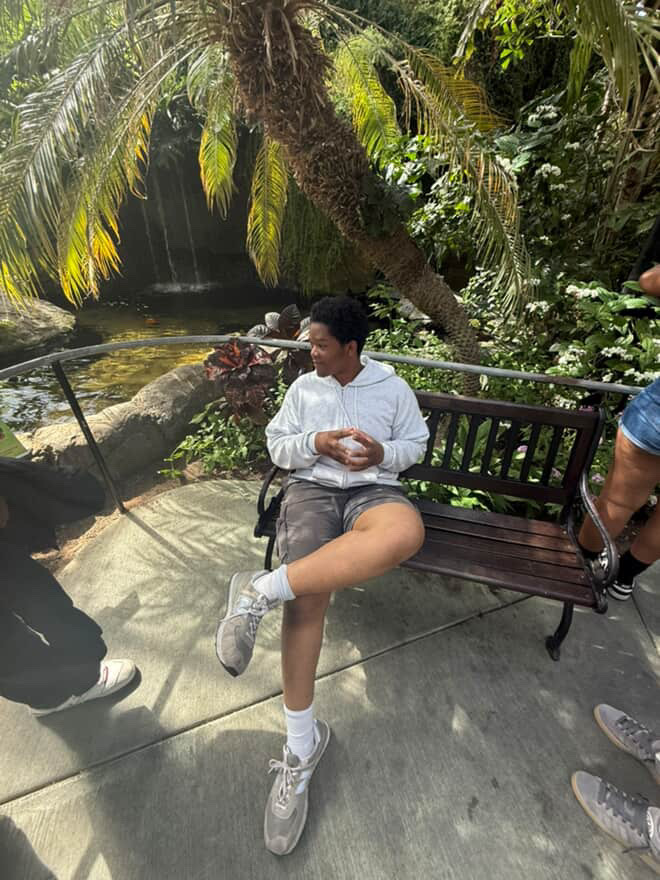
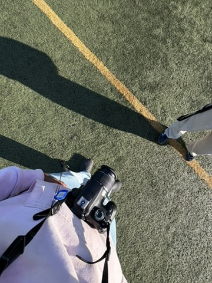
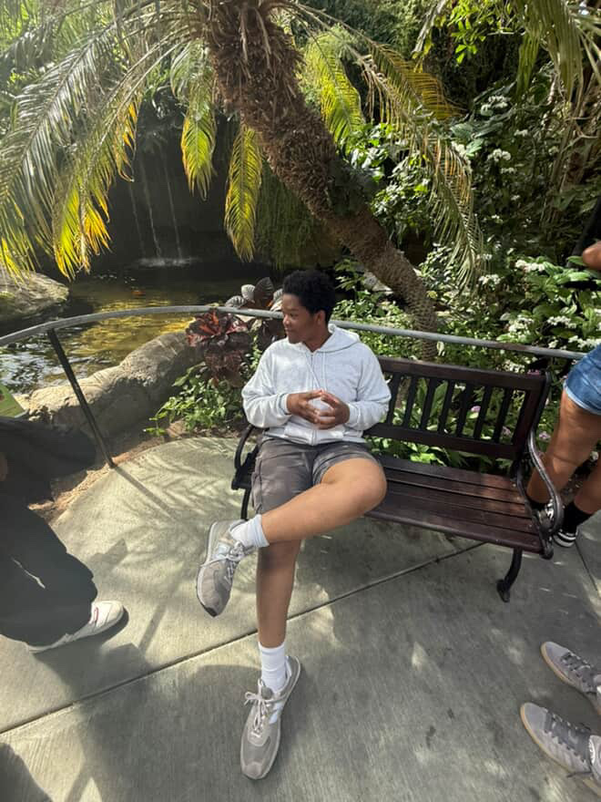

About Me
I’m a kid from Richmond, California, who’s all about basketball and good vibes. Whether I’m hooping at the local park or catching a Warriors game on TV, the court is where I feel most at home. Off the court, I love going out—trying new food spots around the Bay, hanging with friends, or just cruising through the city. For me, it's all about staying active, staying sharp, and enjoying life one day at a time.Sure! Here's a paragraph you can use or tweak for your portfolio: --- Getting into sports photography has been one of the most fun and exciting experiences for me. At first, I just wanted to capture cool moments during games—whether it was a buzzer-beater shot, a fast break, or the raw energy on a player’s face. But over time, I started noticing how powerful those images could be. Sports photography taught me how to freeze emotion in a split second and tell a story without words. I love being on the sidelines, camera in hand, chasing the perfect shot that shows the heart and hustle behind every play. It’s not just about action—it’s about capturing passion, movement, and moments that people remember.